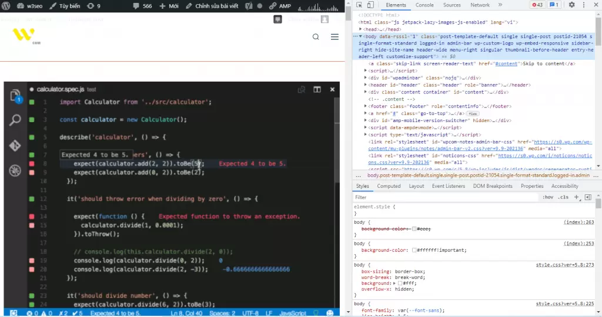
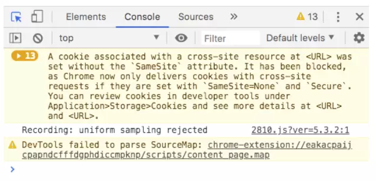

JavaScript là một ngôn ngữ lập trình website, được tích hợp và nhúng trong HTML giúp website sống động hơn. JavaScript cho phép kiểm soát các hành vi của trang web tốt hơn so với khi chỉ sử dụng mỗi HTML
JavaScript có thể được ứng dụng trong rất nhiều lĩnh vực:
Khi tải một trang web, trình duyệt phân tích cú pháp HTML và tạo ra một loại dữ liệu gọi là DOM (Document Object Model) từ nội dung. DOM thể hiện chế độ xem trực tiếp của trang web với mã JavaScript. Đoạn mã này thực hiện cập nhật cho DOM và được trình bày ngay lập tức cho người dùng.
Document Object Model - DOM ("Mô hình Đối tượng Tài liệu"), là một giao diện lập trình ứng dụng (API). DOM được dùng để truy xuất các tài liệu dạng HTML và XML, có dạng một cây cấu trúc dữ liệu, và thông thường mô hình DOM độc lập với hệ điều hành và dựa theo kỹ thuật lập trình hướng đối tượng để mô tả tài liệu.
Với DOM, JavaScript được tất cả sức mạnh cần thiết để tạo ra HTML động:
Nhờ Javascript, các lập trình viên có thể dễ dàng viết tập lệnh phía máy khách, tích hợp các tập lệnh một cách liền mạch vào HTML, cho phép website tương tác, trả lời người dùng ngay lập tức và tạo ra giao diện hiển thị phong phú hơn.
Các lập trình viên có thể viết mã phía máy chủ bằng JavaScript.
Javascript cho phép các nhà phát triển đơn giản hóa thành phần của ứng dụng, qua đó đơn giản hóa việc phát triển các ứng dụng web phức tạp.
JavaScript cho phép thiết kế web responsive – tối ưu trên cả máy tính và thiết bị di động chỉ với một bộ mã.
Để tham gia vào dự án Tăng tốc trang di động (AMP) của Google, các lập trình viên phải sử dụng ngôn ngữ lập trình JavaScript
Mặc dù thiếu một số tính năng phức tạp được cung cấp bởi các ngôn ngữ lập trình hiện đại như Java và C#, JavaScript vẫn có thể dễ dàng mở rộng bằng cách sử dụng các bộ chuyển đổi như CoffeeScript, TypeScript, DukeScript và Vaadin.
Hiện nay có rất nhiều thư viện và khung được viết từ Javascript như:
Tất cả những đoạn mã Javascript đều phải đặt trong cặp thẻ mở <script> và thẻ đóng </script>
Ví dụ:
<script language="javascript"> alert("Hello World!"); </script>
Có ba cách đặt thẻ script thường được sử dụng dưới đây:
Thông thường, bạn có thể viết những đoạn mã Javascript trên phần head. Tuy nhiên, đó cũng không phải là điều kiện bắt buộc. Vì vậy bạn có thể đặt ở bất kỳ đâu tùy thích miễn là được bao lại bằng thẻ script.
Ví dụ: Đặt trong thẻ head
<html> <head> <title></title> <script language="javascript"> alert("Hello World!"); </script> </head> <body> </body> </html>
Bạn có thể viết những đoạn mã Javascript ở một file có phần mở rộng là .js, sau đó dùng thẻ script để import vào. Lúc này bên trong file demo.js bạn không đặt thẻ scirpt. Vì nhờ vào đuôi .js, trình duyệt sẽ tự nhận đây là file chứa mã Javascript.
Ví dụ:
<script language="javascript" src="demo.js"></script>
Với Inline, bạn sẽ viết những đoạn mã Javascript trực tiếp trong thẻ HTML. Ví dụ bên dưới viết dưới dạng inline vì đoạn mã alert(1) được đặt trong sự kiện onclick của thẻ button.
Ví dụ:
<input type="button" onclick="alert(1)" value="Click Me"/>
Bước 1:
<html> <head> <title></title> </head> <body> <input type="button" value="Click Me"/> </body> </html>
Bước 2:
Viết mã Javascript khi click vào button có id=”clickme” .
<html> <head> <title></title> </head> <body>> <input type="button" id="clickme" value="Click Me"/> <script language="javascript"> // Lấy element có id=clickme lưu vào biến button var button = document.getElementById('clickme'); // Khi click vào element chứa trong button thì thực hiện một function, // bên trong function thông báo lên Hello World! button.addEventListener('click', function(){ alert('Hello World!'); }); </script> </body> </html>
Đây là những gì bạn sẽ thấy khi mở Chrome Developer Tools:
Có ba tab ở đầu cửa sổ Chrome Developer Tools và sáu tab khác mà bạn có thể thấy bằng cách nhấp vào biểu tượng >> bên cạnh chúng.
Các tab là:
Tab Console hiển thị code JavaScript. Nó cung cấp cho bạn thông tin về các yếu tố tương tác trên một trang. Trong tab console, bạn có thể viết JavaScript để tương tác với trang web bạn đang xem và nó cũng cho phép bạn viết thông báo cho chính mình bằng JavaScript của các trang web bạn đang xây dựng, sau đó sẽ hiển thị trong tab console để cho biết rằng JS đã được thực thi .
JavaScript có 8 kiểu dữ liệu cơ bản, trong đó, có 7 kiểu dữ liệu nguyên thủy (boolean, null, undefined, number, BigInt, string, symbol) và 1 kiểu dữ liệu dạng tham chiếu (object).
Ví dụ:
let isWebLoaded = true; // => Trang web đã được tải xong console.log(isWebLoaded); // true let isProgramRunning = false; // Chương trình đang không chạy console.log(isProgramRunning); // false
Ví dụ:
let language = null; console.log(language); // null
Ví dụ:
let language = undefined; console.log(language); // undefined
Ví dụ khai báo biến mà không gán giá trị:
let language; console.log(language); // undefined
Trường hợp biến đã có giá trị rồi, bạn vẫn có thể chủ động gán lại giá trị undefined cho biến. Tuy nhiên, điều này là không nên. Vì như vậy là không đúng ý nghĩa của kiểu dữ liệu undefined.
let language = "JavaScript"; console.log(language); // JavaScript // KHÔNG NÊN language = undefined; console.log(language); // undefined // NÊN language = null; console.log(language); // null
let n1 = 66; // số nguyên dương let n2 = -66; // số nguyên âm let n3 = 3.14; // số thực dương let n4 = -3.14; // số thực âm let n5 = 2e3; // => 2*10^3 = 2000 let n6 = 2e-3; // => 2*10^(-3) = 0.002 let n7 = 0xff; // số dạng hexa (hệ cơ số 16): 15*16 + 15 = 255 let n8 = 067; // số dạng octa (hệ cơ số 8): 6*8 + 7 = 55 let n9 = 0b11; // số dạng nhị phân (hệ cơ số 2): 1*2 + 1 = 3
Ngoài những loại số trên, JavaScript còn có 3 số đặc biệt là: Infinity, -Infinity và NaN.
console.log(Infinity); // Infinity console.log(1 / 0); // Infinity
console.log(-Infinity); // -Infinity console.log(-1 / 0); // -Infinity
// Lấy 0 / 0 console.log(0 / 0); // NaN // Lấy chuỗi ký tự chia cho số console.log("JavaScript" / 2); // NaN // Lấy hai số Infinity trừ cho nhau console.log(Infinity - Infinity); // NaN
Nhờ những số đặc biệt này mà việc tính toán trong JavaScript "luôn an toàn". Vì chương trình sẽ không bao giờ bị crash do lỗi chia cho 0 hay giá trị không phải số. Điều mà bạn có thể gặp phải ở nhiều ngôn ngữ khác như C/C++, Java,...
Dùng để biểu diễn số nguyên lớn, có độ dài tùy ý. Để biểu diễn số thuộc kiểu BigInt, bạn chỉ cần thêm chữ cái n ở cuối.
Trong JavaScript, kiểu dữ liệu number không thể biểu diễn một số nguyên lớn hơn (253-1) (bằng 9007199254740991) và nhỏ hơn -(253-1).
Với hầu hết các trường hợp, việc sử dụng kiểu dữ liệu number là quá đủ. Nhưng đôi khi, bạn vẫn cần biểu diễn và tính toán với những số nguyên cực kỳ lớn. Do đó, kiểu dữ liệu BigInt ra đời nhằm giải quyết vấn đề này.
Để biểu diễn số nguyên với kiểu BigInt, bạn chỉ cần thêm chữ cái n ở phía sau, ví dụ:
const reallyBigNumber = 12345678987654321012345678987654321n; console.log(reallyBigNumber); // 12345678987654321012345678987654321n
String là kiểu dữ liệu dùng để biểu diễn chữ, văn bản, đoạn văn bản,...
Có ba cách để biểu diễn string trong JavaScript:
Ví dụ:
const msg1 = "Đây là string dùng dấu nháy đơn"; const msg2 = "Đây là string dùng dấu nháy kép"; const msg3 = `Đây là string dùng dấu backtick`;
Dấu nháy đơn và dấu nháy kép là hoàn toàn giống nhau.
Riêng với dấu "backtick", bạn có thể sử dụng biến, hằng hoặc thậm chí viết một biểu thức trong đó, với cú pháp ${…}, ví dụ:
// Truyền biến vào trong dấu "backtick" let name = "Lam"; console.log(`My name is ${name}`); // My name is Lam // Truyền hằng vào trong dấu "backtick" const language = "JavaScript"; console.log(`You are learning ${language}`); // You are learning JavaScript // Truyền vào biểu thức console.log(`1 + 2 = ${1 + 2}`); // 1 + 2 = 3
Symbol là một kiểu dữ liệu nguyên thủy dùng để tạo ra các giá trị duy nhất (unique value) và bất biến (immutable). Symbol thường được dùng làm key cho kiểu dữ liệu object sau đây.
Object là kiểu dữ liệu tham chiếu. Có thể hiểu object là một tập hợp gồm các cặp key - value (khóa - giá trị).
Trong đó, kiểu dữ liệu của key có thể là string hoặc symbol. Và value ứng với key có thể là bất kỳ kiểu dữ liệu nào.
Như đã nói ở trên, một biến trong JavaScript có thể thuộc bất kỳ kiểu dữ liệu nào. Để xác định kiểu dữ liệu hiện tại của một biến, JavaScript cung cấp cho bạn typeof, với hai loại cú pháp:
Kết quả trả về sẽ là một string ứng với tên của kiểu dữ liệu. Ví dụ về toán tử typeof với các kiểu dữ liệu trong JS:
let x; console.log(typeof x); // undefined x = true; console.log(typeof x); // boolean x = 1; console.log(typeof x); // number x = 1234567891234567890123456789125345362n; console.log(typeof x); // bigint x = "hello"; console.log(typeof x); // string // (1) x = Symbol("id"); console.log(typeof x); // symbol // (2) x = { n: 1 }; console.log(typeof x); // object // (3) x = null; console.log(typeof x); // object
Giống như nhiều ngôn ngữ lập trình khác, JavaScript có các biến. Các biến có thể được coi là các thùng chứa có tên. Bạn có thể đặt dữ liệu vào các vùng chứa này và sau đó tham khảo dữ liệu chỉ bằng cách đặt tên vùng chứa.
Các biến JavaScript được lưu trữ trong bộ nhớ của browser process ( tiến trình trình duyệt) hiểu nôm na 1 cách đơn giản là biến được lưu trong phần Ram mà trình duyệt đang sử dụng.
Để khai báo một biến ta sử dụng từ khóa const, let, var.
const được sử dụng để khai báo 1 hằng số, và giá trị của nó không thay đổi trong suốt chương trình.
let khai báo biến chỉ có thể truy cập được trong block bao quanh nó được xác định bằng cặp {}.
var khai báo biến có thể truy cập ở phạm vi hàm số hoặc bên ngoài hàm số, toàn cục.
Giống như ngôn ngữ khác, cách đặt tên biến của JS cũng phải tuân theo 1 số quy tắc sau :
*// Đúng* var person; *// Đúng* var _person; *// Đúng* var __person; *// Đúng* var person1; *// SAI* var 10persion;
Khi khai báo biến ta không cần phải khai báo kiểu của biến đó trước khi dùng. Kiểu sẽ được tự động xác định trong lúc chương trình được thực thi. Điều đó cũng có nghĩa là một biến có thể chứa giá trị của các kiểu dữ liệu khác nhau.
var test = 123 ; // test là một số var test = "variable of js "; //test là một chuỗi var test = true; // test là một boolean
Các kiểu dữ liệu của biến đã được trình bày trong phần trên
Có hai loại phạm vi trong JavaScript. biến cục bộ (local scope) và biến toàn cục (global scope). Biến toàn cục được khai báo ngoài hàm , trong khi đó biến cục bộ được lưu khai báo bên trong một hàm. (Nên với cùng một tên biến, ta có thể khai báo ở những hàm khác nhau).
Một biến toàn cục có thể được truy cập từ bên ngoài của hàm cũng như bên trong của hàm nhưng, một biến cục bộ chỉ có thể được truy cập bên trong hàm. Nếu truy cập từ bên ngoài của hàm, bạn sẽ nhận được lỗi 'undefined variable' (biến không xác định).
Ví dụ:
function sum(a, b) { var sum = (a + b) ; // sum là biến cục bố return sum; } var result = sum(10, 20); //result là biến toàn cục //và chúng ta có thể sử dụng biến result ở khắp nơi function showResult(result) { alert('sum is: ' + result); } showResult();
Toán tử gán được dùng để gán giá trị ở bên phải toán tử vào biến ở bên trái toán tử. Có các toán tử gán sau:
| Toán tử | Ví dụ | Ý nghĩa |
|---|---|---|
| = | x = y | gán giá trị y vào x |
| += | x =+ y | x = x + y; cộng thêm vào x giá trị y |
| -= | x -= y | x = x - y |
| *= | x *=y | x = x * y |
| /= | x /= y | x = x / y |
| %= | x %= y | x = x % y |
| ??= | x ??= y | Toán tử ??= trong js là phép gán khi null. Nếu x=null thì giá trị y gán cho x, nếu x đã khác null thì không thay đổi gì |
Các toán tử số học này thực hiện trên các số - dữ liệu dạng số (giá trị cụ thể hoặc giá trị nằm trong tên biến).
| Toán tử | Ví dụ | Ý nghĩa |
|---|---|---|
| + | Phép cộng | 25 + 5 = 30 |
| - | Phép trừ | 10 - 5 = 5 |
| * | Phép nhân | 2 * 3 = 6 |
| / | Phép chia | 20 / 2 = 10 |
| % | Lấy phần dư của phép chia | 56 / 3 = 2 |
| ++ | Tăng thêm 1 | var a = 10; a ++; //giá trị a là 11 |
| -- | giảm đi 1 | var a = 10; a --; //giá trị a là 9 |
Ví dụ:
var x = 10 + 5; document.write(x); // In ra: 15
var x = 10; var y = x + 5 + 22 + 45 + 6548; document.write(y);
var a = 0; b = 10; var a = b++; //a sẽ là 10; b là 11
Toán tử so sánh sử dụng trong các biểu thức về logic để so sánh bằng nhau, khác nhau. Nó trả về giá trị true false
JavaScript có một số toán tử so sánh, ví dụ so sánh bằng: ==
| Toán tử | Diễn tả | Ví dụ |
|---|---|---|
| == | so sánh bằng (và giá trị, không so sánh về kiểu dữ liệu) | var v1 = (5 == 10); // false var v2 = 5; // số var v3 = "5 "; // chuỗi var v4 = (v2 == v3);// true |
| === | === trong js so sánh giống nhau (true nếu cùng giá trị và kiểu dữ liệu) | var v1 = (5 === 10); // false var v2 = 5; // kiểu số number var v3 = "5 "; // chuỗi string var v4 = (v2 === v3); // false, giống giá trị nhưng khác kiểu |
| != | so sánh khác giá trị (dấu khác trong javascript chỉ so sánh và giá trị không xét đến kiểu) | var v1 = (5 != 10); // true var v2 = (5 != "5"); // false |
| !== | Khác giá trị và khác kiểu | var v1 = (5 !== 10); // false - khác giá trị nhưng cùng kiểu var v2 = (5 !== "10"); // true |
| > | lớn hơn | 10 > 5 true |
| >= | lớn hơn hoặc bằng | 10 >= 5 true |
| < | nhỏ hơn | 10 < 5 false |
| <= | nhỏ hơn hoặc bằng | 10 <= 5 false |
Bảng toán tử logic gồm các phép toán : và - hoặc - phủ định
| Toán tử | Diễn tả |
|---|---|
| && | phép và (toán tử && trong javascript) trả về true nếu 2 số hạng là true: a && b |
| || | phép hoặc (toán tử hoặc trong javascript) trả về true nếu 1 trong 2 số hạng là true : a || b |
| ! | phủ định; !a trả về giá trị ngược với biểu thức a |
variable = (condition) ? value1: value2;
Nhận giá trị value1 nếu điều kiện là true, nhận value2 nếu điều kiện false. Đây là cách viết ngắn ngọn của lệnh if, câu lệnh trên tương đương với
if (condition) variable = value1; else variable = value2;
var isAdult = (age < 18) ? "Too young": "Old enough"; //isAdult = "Too young" nếu age nhỏ hơn 18 //isAdult = "Old enough" nếu age lớn hơn hoặc bằng 18
Toán tử với chuỗi sử dụng nhiều là nối hai chuỗi lại với nhau, sử dụng toán tử + để nối. Lưu ý toán tử này có thể nối số vào chuỗi.
var mystring1 = "Học viết mã "; var mystring2 = "JavaScript."; document.write(mystring1 + mystring2); //sẽ viết ra: Học viết mã JavaScript.
Toán tử typeof trả về kiểu dữ liệu cần kiểm tra của một biến, một giá trị.
var a = 1; var b = "Hi"; var c = true; var d = null; var e; console.log(typeof(a)); // trả về number console.log(typeof(b)); // trả về string console.log(typeof(c)); // trả về boolean console.log(typeof(d)); // trả về object console.log(typeof(e)); // trả về undefined console.log(typeof(f)); // trả về undefined